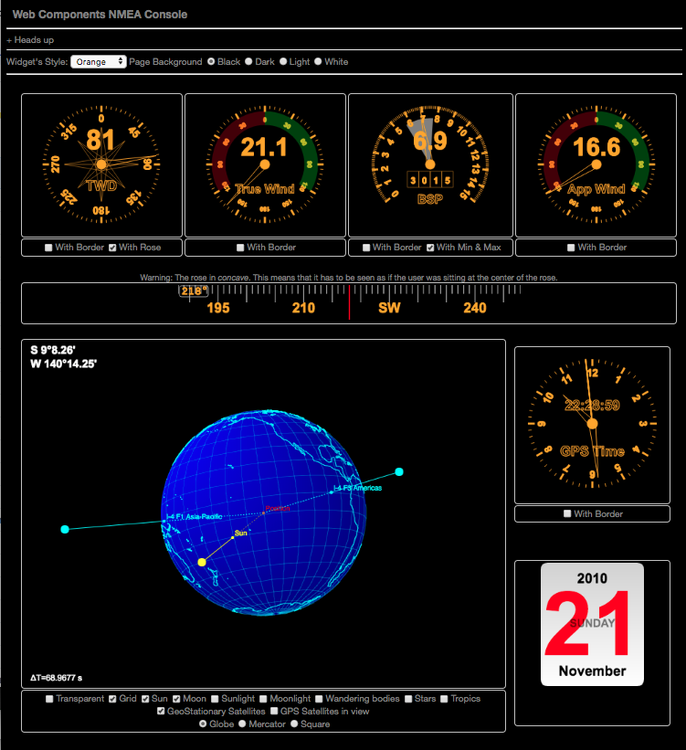
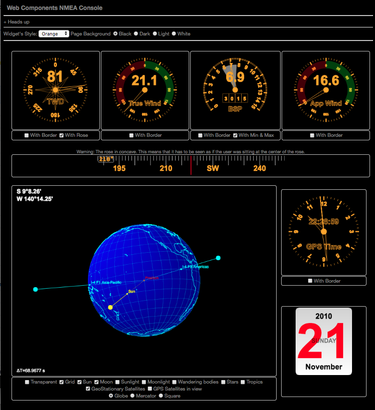
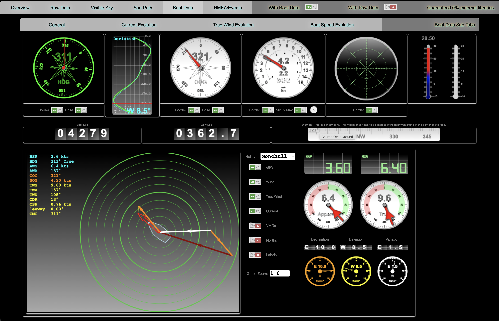
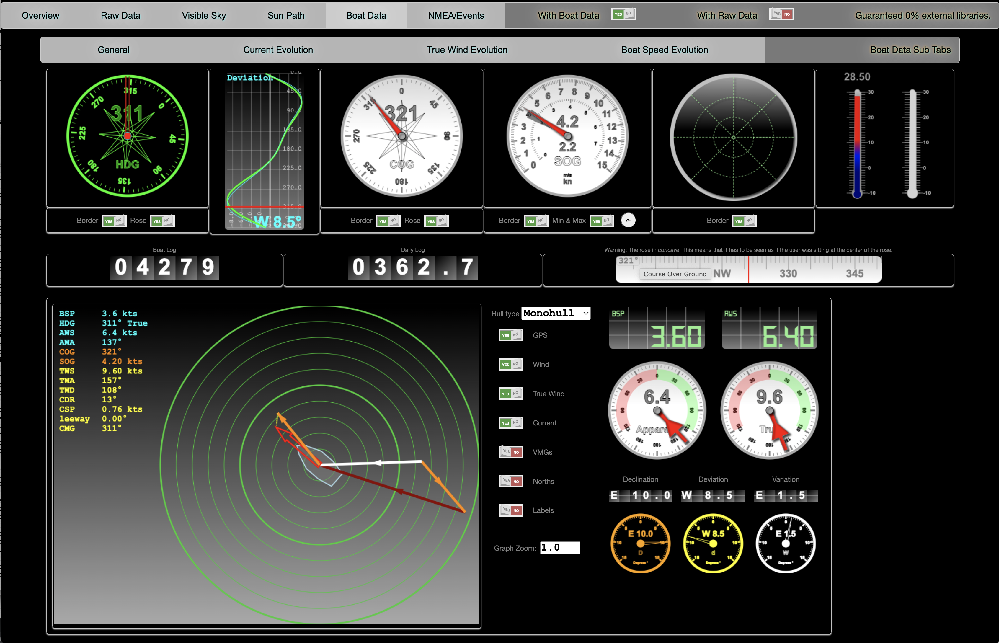
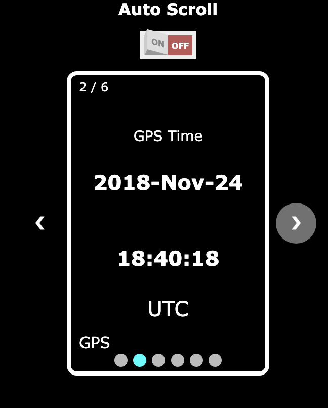
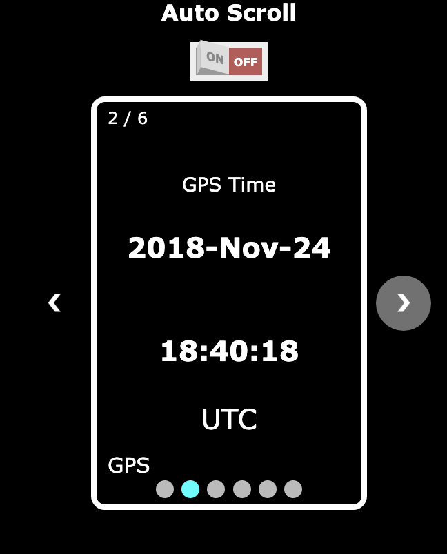
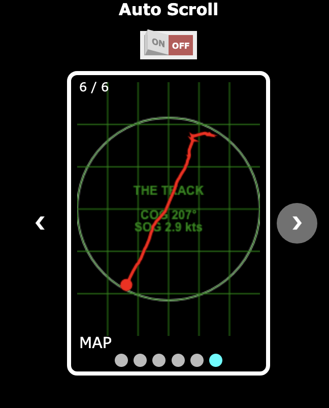
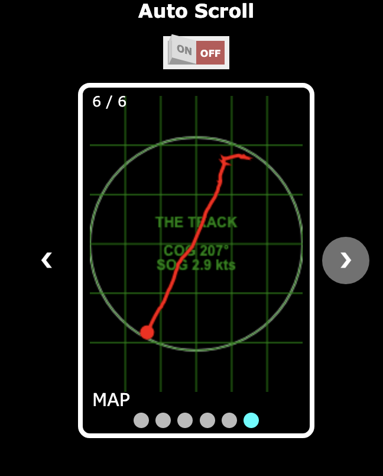

Once again, what we're talking about here is a web interface (aka HTML) that will display data calculated on the server.
The server uses:
- Data emitted by the GPS
- Data defined by marks and borders
- Data emitted by the AIS
Those data are available on the server, in an entity called the "cache". In Java - which is the programming language used in the examples mentionned here,
this "cache", this Object, is a
HashMap<String, Object>.
To display those data in a web page, the client (the web page) is regularly emitting a request to the server, using this technology called
REST
(REpresentational State Transfer, which obviously does not mean anything). This technology is available in many tools, like for example the
curl command:
$ curl -X GET http://192.168.50.10:9999/mux/cache
In order to be compatible with the tools available on the server, and on the client, we use the format named
JSON (JavaScript Object Notation) for
the message returned to the client by the server. The same is obtained by the command
curl mentioned above.
Here is a short example (truncated):
{
"Damping": 1,
"NMEA_AS_IS": {
"GGA": "$GPGGA,201053.00,4738.52432,N,00323.04391,W,1,08,1.17,-6.4,M,49.6,M,,*67",
"MMB": "$PYMMB,30.3035,I,1.0261,B*72",
"GLL": "$GPGLL,4738.52432,N,00323.04391,W,201053.00,A,A*79",
"XDR": "$PYXDR,H,44.1,P,0,C,31.6,C,1,C,17.9,C,DEWP,P,102608,P,3,P,1.0261,B,4*4E",
"VTG": "$GPVTG,273.49,T,,M,2.690,N,4.983,K,A*3D",
"RMC": "$GPRMC,201053.00,A,4738.52432,N,00323.04391,W,2.690,273.49,230623,,,A*7E",
"AIS": "!AIVDM,1,1,,A,402:nvAvQRggMOiEsNKAKE?008Ag,0*30\r",
"GSV": [
"$GPGSV,3,1,12,05,45,304,35,06,13,187,23,07,58,073,32,09,25,076,27*73",
"$GPGSV,3,2,12,11,42,226,28,13,28,258,34,14,06,148,21,16,02,019,24*77",
"$GPGSV,3,3,12,20,72,281,32,29,04,300,35,30,68,148,29,39,06,107,*7C"
],
"MWV": "$CCMWV,061.0,T,002.5,N,A*3B",
"TXT": "$GPTXT,01,01,02,LLC FFFFFFFF-FFFFFFFF-FFFFFFFF-FFFFFFFF-FFFFFFFD*2C",
"VWT": "$CCVWT,61.2,R,2.5,N,1.3,M,4.6,K*7D",
"GSA": "$GPGSA,A,3,09,07,13,05,20,11,06,30,,,,,2.01,1.17,1.64*0B",
"MLS": "$PNMLS,36,25,3*51\r",
"MWD": "$CCMWD,060.0,T,,M,2.5,N,1.3,M*69",
"MTA": "$PYMTA,31.6,C*08"
},
"dewpoint": 17.9,
"HDG Offset": 0,
"Relative Humidity": 44.1,
"Delta Altitude": 37.1,
"ais": {
"2275065": {
"4": {
"messageType": 4,
"repeatIndicator": 0,
"recordTimeStamp": 1717602450279,
"messageDescription": "Base Station",
"navStatusDesc": null,
"aidTypeDesc": null,
"vesselNameStr": null,
"nameStr": null,
. . .
The structure of this message depends one the way the server was coded.
There is - for now - no standard in this area.
Then, the content of this message is parsed by the client, in order to produce the representations seen before in this document.
The technology used on the client side to produce the chart is WebComponent (that one is a standard).


 

 

 



 
